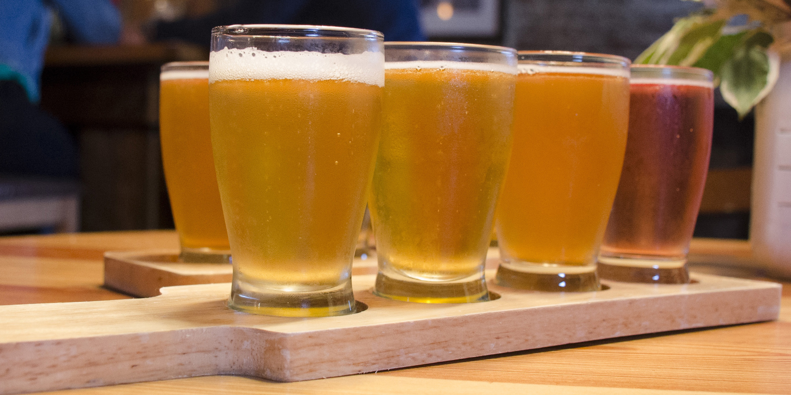
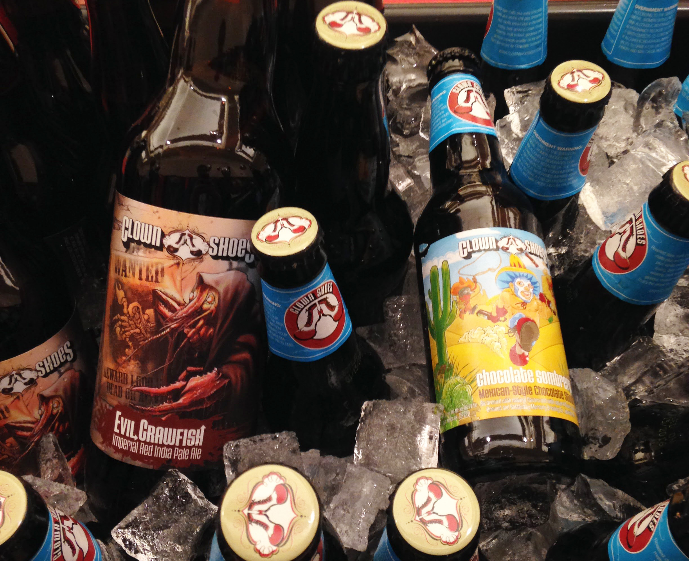

Booze Reviews!
We like to review all manner of boozes. Basically, whatever catches our eye, with a particular penchant for local, new, or small companies. We post only positive reviews, as we consider That Special Flavor to be a stamp of approval. Samples are of course accepted, and any sponsored reviews will be disclosed as such.